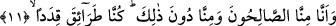
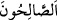
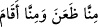
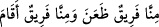
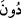

edeplerdendir. Nitekim şu âyet-i kerîme ve benzerlerinde de aynı edep mevcuddur:
“Hastalandığım zaman bana şifâ veren O’dur.” (eş-Şuara, 26/80)
İntisâf isimli eserde şöyle deniyor: Cinlerin inançlarına göre hidâyet ve dalâlet
tümüyle Cenâb-ı Hakk’ın yaratmasıyladır. Onlar -âyette görüldüğü üzere- “yoksa
Rableri onlara hayır mı diledi?” diyerek hayrı ve iyiliği Allah Teâlâ’ya nisbet ederek,
“yeryüzündekilere kötülük mü murâd edildi” şeklinde söyleyerek kötülüğün fâilini gizli
tutarak büyük bir terbiye, edep örneği sergilediler. Böylece onlar kendi şahıslarında
inançla edebi, terbiyeyi birleştirmiş oldular.
11. Gerçekten biz, -kimimiz sâlih kişiler, kimimiz ise bunlardan aşağıda olmak
üzere- türlü türlü yollar tutmuştuk.
“Gerçekten biz -kimimiz sâlih kişiler-” yâni kendileri hakkında ve başkalarıyla olan
münâsebetleri noktasında salâh-ı hâl ile hâllenmiş kişileriz. Ya da kötü ruhların,
nefislerin gereği olan fesâda değil; selim fıtratın gereği olan hayra uygun biçimde
hayırlı kişileriz. Âyette “bizden” anlamına gelen “ /minna” ifâdesinin öne alınmasıyla
sağlanan kasr, onların iddiâlarından ibârettir. Yâni onlar bu ifâdeleriyle sanki
başkalarının sâlih oluşlarını itibara almıyor gibiler.
Âyette yer alan “/es-Sâlihun” kelimesi mübtedâ, “minna” kelimesi de öne
alınmış haberdir. Bu cümle daha önce geçen “inne” edâtının haberidir. “es-Sâlihun”
kelimesinin fâil olması, câr ve mecrûrun da -mübtedâya dayandığı için- zarf mecrasında
tahlil edilmesi mümkündür.
“Kimimiz ise bunlardan aşağıda olmak üzere” yâni kimimiz sâlih olma bakımından
bunlardan daha aşağı bir topluluktur. Bu son kısımda “mevsuf” hazfedilmiştir. Çünkü bu
mevsufun “min” ile yapılan tafsîli anlatımda hazfedilmesi -dilbilgisi kurallarına göre-
câizdir. İşte bundan dolayı Araplar “/Bizim içimizde seferde olan olduğu
gibi ikamet edenler de vardır.” şeklinde cümle kurarlar ve “/Bizden
bir grup sefer etmiştir, bir grup da yerinde kalmıştır” mânâsını kasdederler. Âyette yer
alan “/dun” zarftır.
Sâlih olanlardan daha aşağı seviyede olanlar ise salâh-ı hâl açısından yukarda
zikredilenlere göre orta seviyede olanlardır. Bunlar ne îmanda ne de takvâda kâmil
olmayan kimselerdir. İşte bu tefsirini yaptığımız ifâdeler cinlerin Kur’an’ı dinlemeden
önceki hâllerini yansıtmaktadır. Nitekim şimdi gelecek olan; “Türlü türlü yollar
tutmuştuk” ifâdesi bu durumu yansıtmaktadır.
Cinlerin Kur’anı dinledikten sonraki hâllerine gelince bu; on üçüncü âyetle başlayan
“doğrusu biz hidâyeti işitince ona îman ettik...” ifâdelerden on dördüncü âyette yer